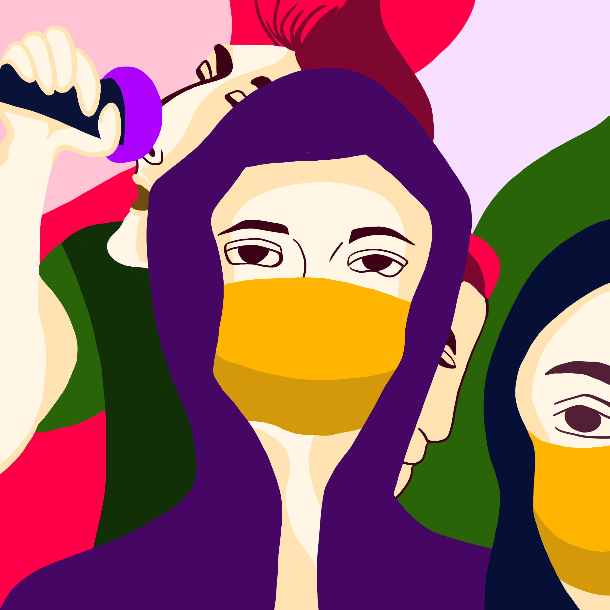

<!DOCTYPE html><!--  This site was created in Webflow. http://www.webflow.com  -->
<!--  Last Published: Wed Sep 08 2021 14:12:25 GMT+0000 (Coordinated Universal Time)  -->
<html data-wf-page="60b4fe88f9cb8377fd12db62" data-wf-site="608c029d75f68cb6619cb216">
<head>
  <meta charset="utf-8">
  <title>LA Illustration | Mask Before Corvid-19</title>
  <meta content="LA Illustration | Mask Before Corvid-19" property="og:title">
  <meta content="LA Illustration | Mask Before Corvid-19" property="twitter:title">
  <meta content="width=device-width, initial-scale=1" name="viewport">
  <meta content="Webflow" name="generator">
  <link href="../css/normalize.css" rel="stylesheet" type="text/css">
  <link href="../css/webflow.css" rel="stylesheet" type="text/css">
  <link href="../css/lan-anhs-design-project.webflow.css" rel="stylesheet" type="text/css">
  <script src="https://ajax.googleapis.com/ajax/libs/webfont/1.6.26/webfont.js" type="text/javascript"></script>
  <script type="text/javascript">WebFont.load({  google: {    families: ["Montserrat:100,100italic,200,200italic,300,300italic,400,400italic,500,500italic,600,600italic,700,700italic,800,800italic,900,900italic","Varela:400","DM Serif Display:regular","Fahkwang:regular,500,600,700"]  }});</script>
  <!-- [if lt IE 9]><script src="https://cdnjs.cloudflare.com/ajax/libs/html5shiv/3.7.3/html5shiv.min.js" type="text/javascript"></script><![endif] -->
  <script type="text/javascript">!function(o,c){var n=c.documentElement,t=" w-mod-";n.className+=t+"js",("ontouchstart"in o||o.DocumentTouch&&c instanceof DocumentTouch)&&(n.className+=t+"touch")}(window,document);</script>
  <link href="../images/favicon.svg" rel="shortcut icon" type="image/x-icon">
  <link href="../images/webclip.svg" rel="apple-touch-icon">
</head>
<body>
  <div data-collapse="medium" data-animation="default" data-duration="400" role="banner" class="navigation w-nav">
    <div class="navigation-items">
      <a href="../index.html" class="logo-link w-nav-brand"></a>
      <div class="navigation-wrap">
        <nav role="navigation" class="navigation-items w-nav-menu">
          <a href="../index.html" class="navigation-item w-nav-link">WORK</a>
          <a href="../about.html" class="navigation-item w-nav-link">About</a>
        </nav>
        <div class="menu-button w-nav-button"></div>
      </div>
    </div>
  </div>
  <div class="work__section">
    <div class="case__containter">
      <div class="w-layout-grid project-overview-grid">
        <div id="w-node-_0befc76b-828c-2822-f9fa-f2c6de040bbf-fd12db62">
          <h1 class="project_title">Masks Before Corvid-19</h1>
          <div class="project-type">Digital illustrations</div>
        </div>
        <div id="w-node-_0befc76b-828c-2822-f9fa-f2c6de040bc4-fd12db62" class="project_intro">
          <div class="position-name-text">The 3 illustrations of how people from Asian countries usually utilize masks in their daily life. </div>
          <div class="body">
            <p class="body">I&#x27;ve learned that people wear masks for different purposes across the world.<br><br>While wearing masks mostly happens at hospitals, when doctors check out their patients or perform surgeries in Europe and America, people from some Asian countries consider masks as a means to protect themselves daily. Lots of the Chinese, Korean, Japanese, Vietnamese, Thai, and Filipino have taken wearing masks on the streets as a social norm.<br><br>When the Corvid-19 (CoronaVirus) epidemic broke out, using masks became intense. People panicked and opted for rushing to wear masks to feel safe. The demand for masks sky-rocketed. Following daily news, I learned that many Vietnamese people ended up buying them at a cutting-throat price.<br><br>This Asian norm is pretty strange to the Western people. To them, wearing masks is associated with getting sick or contracting an infectious killer virus. That is why there has been a heated debate on the use of masks in order to prevent the spread of the coronavirus. Even somewhere on Earth people are violently attacking each other just because of the same issue.<br><br>The understanding of the culture of wearing masks in different countries is crucial. It can help us shift the focus to more effective solutions. In the end, stirring up hatred and discrimination within a community only leads to a dead-end.</p>
          </div>
        </div>
        <div id="w-node-_0befc76b-828c-2822-f9fa-f2c6de040bc9-fd12db62" class="project-summary">
          <div>
            <div class="w-layout-grid grid-4">
              <div>
                <div class="text-block-6">My roles</div>
                <div class="body">Illustrator</div>
              </div>
              <div>
                <div class="text-block-6">Date</div>
                <div class="body">01 April 2020</div>
              </div>
              <div>
                <div class="text-block-6">Location</div>
                <div class="body">Helsinki, Finland</div>
              </div>
              <div>
                <div class="text-block-6">Keywords</div>
                <div class="body">Masks, Asian culture, Corvid-19</div>
              </div>
              <div>
                <div class="text-block-6">Tools</div>
                <div class="body">Adobe Illustration, Photoshop, Premiere Pro, After Effect<br></div>
              </div>
            </div>
          </div>
        </div>
      </div>
    </div>
  </div>
  <div class="work__section masks">
    <div class="case__containter w-container">
      <div class="w-layout-grid img-text_grid">
        <div>
          <p class="body">Before the Corvid-19 epidemic, students and citizens in HongKong decided to wear masks to protest against the HongKong government&#x27;s introduction of the Fugitive Offenders amendment bill and the issue of police brutality (2019-2020).</p>
        </div>
      </div>
      <div class="w-layout-grid img-text_grid">
        <div>
          <p class="body">Motorbikes are majorly used for transportation.<br><br>Before the Corvid-19 epidemic, people in Vietnam and some Southeast Asian countries were wearing masks in order to prevent their health from getting deteriorated by heavy air pollution.</p>
        </div>
      </div>
      <div class="w-layout-grid img-text_grid">
        <div>
          <p class="body">Before the Corvid-19 epidemic, in Japan, salarymen who were having flu had to wear masks so that they could maintain the work progress without spreading the virus to others. <br><br>Idol culture has been huge in Korea. Before the Corvid-19 epidemic, Korean celebrities usually chose to wear masks in public places in order to avoid the paparazzi and those who might abuse their personal image for illegal purposes. </p>
        </div>
      </div>
    </div>
  </div>
  <div class="footer-wrap">
    <div>
      <a href="#" target="_blank" class="webflow-link w-inline-block">
        <div class="footer-note">© 2021 Lan anh nguyen le. All rights reserved.</div>
      </a>
    </div>
    <div class="footer-links">
      <a href="https://www.linkedin.com/in/lan-anh-nguyen-le-5b9643b0/" target="_blank" class="footer-item">linkedin</a>
    </div>
  </div>
  <script src="https://d3e54v103j8qbb.cloudfront.net/js/jquery-3.5.1.min.dc5e7f18c8.js?site=608c029d75f68cb6619cb216" type="text/javascript" integrity="sha256-9/aliU8dGd2tb6OSsuzixeV4y/faTqgFtohetphbbj0=" crossorigin="anonymous"></script>
  <script src="../js/webflow.js" type="text/javascript"></script>
  <!-- [if lte IE 9]><script src="https://cdnjs.cloudflare.com/ajax/libs/placeholders/3.0.2/placeholders.min.js"></script><![endif] -->
</body>
</html>